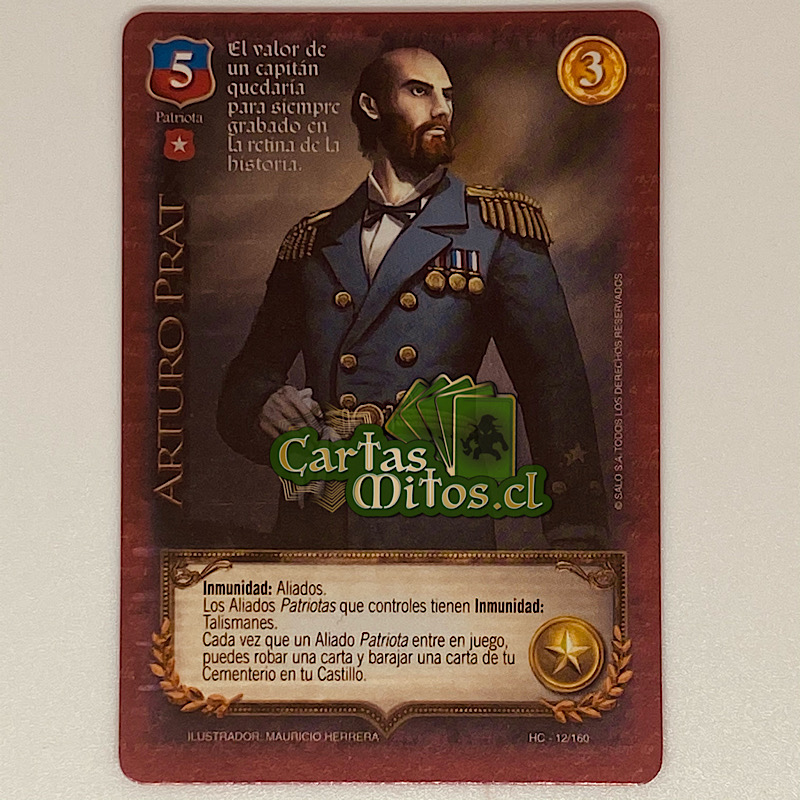
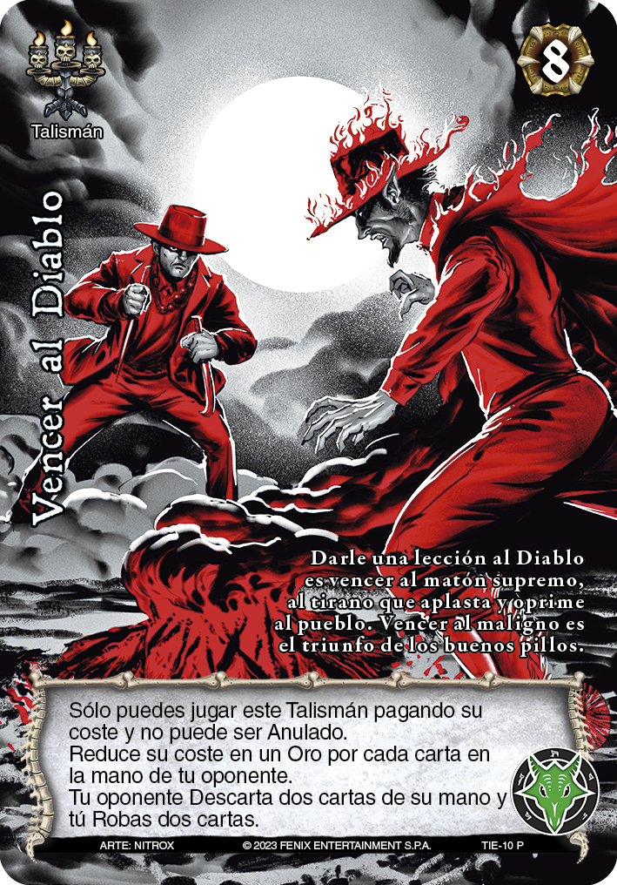

El juego de cartas chileno es famoso por su rica tradición de mitos y leyendas que rodean a sus cartas y su historia. En esta página, exploraremos algunos de los mitos y leyendas más conocidos.
El "Primer Bloque" es una de las expansiones más icónicas del juego de cartas chileno. Introdujo una serie de cartas y personajes nuevos, cada uno con su propia historia y mitología.
Uno de los personajes destacados de esta expansión es Arturo Prat, una carta que representa un guerrero temible que viene para enfrentarse a los jugadores.
El "Imperio de Mitos y Leyendas" es otra expansión importante que agregó profundidad al juego. En esta expansión, los jugadores pudieron sumergirse aún más en las fascinantes historias y mitos detrás de las cartas.
Una de las cartas emblemáticas de esta expansión es Vencer al Diablo, que simboliza una de las peleas más contadas en la mitología de chile.
Los mitos en el juego de cartas chileno a menudo se centran en las habilidades mágicas de las cartas y los seres sobrenaturales que las habitan. Uno de los mitos más famosos es el de La Llorona, una carta que supuestamente llora lágrimas de sangre.
Otro mito popular es el de El Chonchón, una carta con la forma de un ave nocturna que se cree que puede volar y espiar a los jugadores.
Las leyendas del juego de cartas chileno añaden un aura especial a cada carta. Una de las leyendas más intrigantes es la de El Trauco, un ser mítico que puede influir en el destino de los jugadores que lo encuentren.
Otra leyenda famosa es la de La Pincoya, una carta que se dice que trae buena suerte y fortuna a quien la posee.